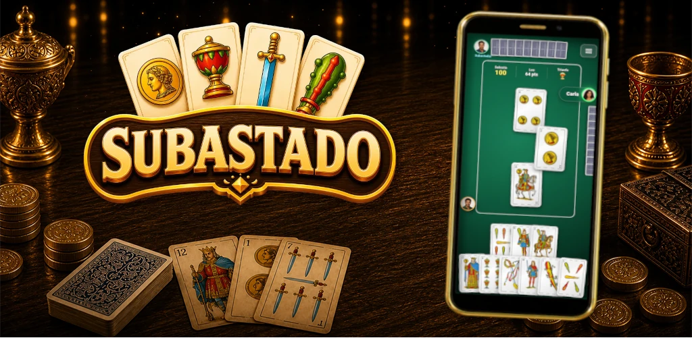

Cómo se juega al Subastado
Subastado se juega con 3 personas y baraja española de 36 cartas: se quitan los treses y cada jugador recibe 12 cartas. En cada mano se subasta, se elige triunfo y el subastador juega solo contra los otros dos jugadores.
Juego de cartas canario para 3 jugadores con pujas, triunfo, bazas y cantes. Juega partidas locales u online hasta llegar a 500 puntos.

Subastado se juega con 3 personas y baraja española de 36 cartas: se quitan los treses y cada jugador recibe 12 cartas. En cada mano se subasta, se elige triunfo y el subastador juega solo contra los otros dos jugadores.
La partida completa se juega a 500 puntos. Se juegan manos hasta que un jugador llega a 500 puntos o más.
Se usa baraja española de 36 cartas, sin treses. Cada jugador recibe 12 cartas y la mano se ordena por palo y número para leerla rápido.
El as vale 11 puntos, el 2 vale 10, el rey 4, el caballo 3 y la sota 2. El 7, 6, 5 y 4 no suman puntos. Hay 120 puntos de cartas y la última baza suma 10 puntos extra.
La subasta empieza en 60 y sube de 5 en 5. En tu turno puedes pujar o pasar. Si todos pasan sin pujar, se reparte una mano nueva.
El mayor postor gana la subasta, elige el palo de triunfo y juega solo contra los otros dos jugadores durante esa mano.
Gana la baza la carta más fuerte del palo de salida, salvo que haya triunfos. Si hay triunfos, gana el triunfo más fuerte.
Si tienes el palo de salida, debes asistir. Si puedes superar la carta que va ganando, debes montar. Si no tienes el palo de salida, debes fallar con triunfo; si ya hay triunfo ganando y puedes superarlo, debes pisar.
Dentro de cada palo el orden es as, 2, rey, caballo, sota, 7, 6, 5 y 4.
Solo puede cantar el subastador, y solo cuando gana una baza. Rey y caballo del triunfo valen 40 puntos; rey y caballo de otro palo valen 20.
Al terminar la mano se comprueba si el subastador llegó a su apuesta. Si cumple, suma los puntos apostados. Si falla, los dos rivales suman esa misma cantidad.
El modo online usa las mismas reglas y continúa mano tras mano hasta que alguien llega a 500 puntos. Si un jugador abandona o agota su tiempo de turno, la partida online se cierra por abandono.
El ranking es una puntuación global de usuario: partida local jugada suma 2, local ganada suma 7, online participada suma 4 y online ganada suma 14.
Descarga Subastado para jugar partidas locales u online, practicar subastas, elegir triunfo y competir en el ranking.